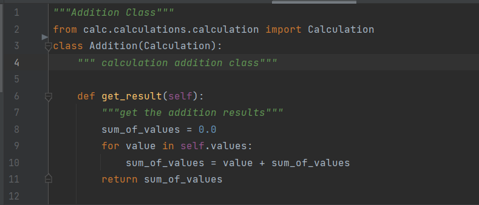

ARRANGE-ACT-ASSERT: A PATTERN FOR WRITING GOOD TESTS
A test is a procedure that exercises a behavior to determine if the behavior functions correctly. There are several different kinds of tests, like unit tests, integration tests, or end-to-end tests, but all functional tests do the same basic thing: they try something and report PASS or FAIL.
Testing provides an empirical feedback loop for development. That’s how testing keeps us safe. With tests, we know when things break. Without tests, coding can be dangerous. We don’t want to deploy big ol’ bugs!
What Is AAA Testing?
AAA is a pattern for organizing tests. It breaks tests down into three clear and distinct steps:
Arrange inputs and targets. Arrange steps should set up the test case. Does the test require any objects or special settings? Does it need to prep a database? Does it need to log into a web app? Handle all of these operations at the start of the test.
Act on the target behavior. Act steps should cover the main thing to be tested. This could be calling a function or method, calling a REST API, or interacting with a web page. Keep actions focused on the target behavior.
Assert expected outcomes. Act steps should elicit some sort of response. Assert steps verify the goodness or badness of that response. Sometimes, assertions are as simple as checking numeric or string values. Other times, they may require checking multiple facets of a system. Assertions will ultimately determine if the test passes or fails.
Behavior-Driven Development follows the Arrange-Act-Assert pattern by another name: Given-When-Then. The Gherkin language uses Given-When-Then steps to specify behaviors in scenarios. Given-When-Then is essentially the same formula as Arrange-Act-Assert.
Every major programming language has at least one test framework. Frameworks like JUnit, NUnit, Cucumber, and (my favorite) pytest enable you, as the programmer, to automate tests, execute suites, and report results. However, the framework itself doesn’t make a test case “good” or “bad.” You, as the tester, must know how to write good tests!
Implementing the AAA pattern
The following is a Addition class with a single method which calculates a sum of two numbers:
Our User class contains a method get_result() that should return the sum of two number. So how do we check that this method does what it says it does? We can write a unit test to make sure we’re getting the correct values. the following code does just that!
So the first part of our test suite is the test_calculation_addition method. The method just groups together the code that we’re testing.
The Arrange step creates a variable named “mynumbers” for testing.
The Act step calls the “Addition” function using the “numumbers” variable and stores the returned value in a variable named “addition.”
The Assert step verifies that “addition” is a correct sum of the values.
What the purpose of testing?
There are two fundamental purposes of testing: verifying procurement specifications and managing risk. First, testing is about verifying that what was specified is what was delivered: it verifies that the product (system) meets the functional, performance, design, and implementation requirements identified in the procurement specifications. Second, testing is about managing risk for both the acquiring agency and the system’s vendor/developer/integrator. The testing program is used to identify when the work has been “completed” so that the contract can be closed, the vendor paid, and the system shifted by the agency into the warranty and maintenance phase of the project.
Why testing is important?
Arrange-Act-Assert is powerful because it is simple. It forces tests to focus on independent, individual behaviors. It separates setup actions from the main actions. It requires test to make verifications and not merely run through motions. Notice how the pattern is not Arrange-Act-Assert-Act-Assert – subsequent actions and assertions belong in separate tests! Arrange-Act-Assert is a great pattern to follow for writing good functional tests.
The AAA pattern gives us simple but effective steps for testing our code. Each step to this pattern has its own job to do. The arrange step sets up our data while the act step performs the actions needed to test it, and the assert will determine if the result from acting on that data is what we expected it to be.
Testing Using external Data
Read CSV File with Pandas
Pandas is an opensource library that allows to you import CSV in Python and perform data manipulation. Pandas provide an easy way to create, manipulate and delete the data.
You must install pandas library with command pip install pandas. In Windows, you will execute this command in Command Prompt while in Linux in the Terminal.
Here , I have made class CSVReader. There I used constructor as a method which takes filepath as an argument.
Now I am testing csv file with method test_add_method_calculator. I am asserting each row to check their result (sum of value 1 and value 2).
We have output of about test is as follow: